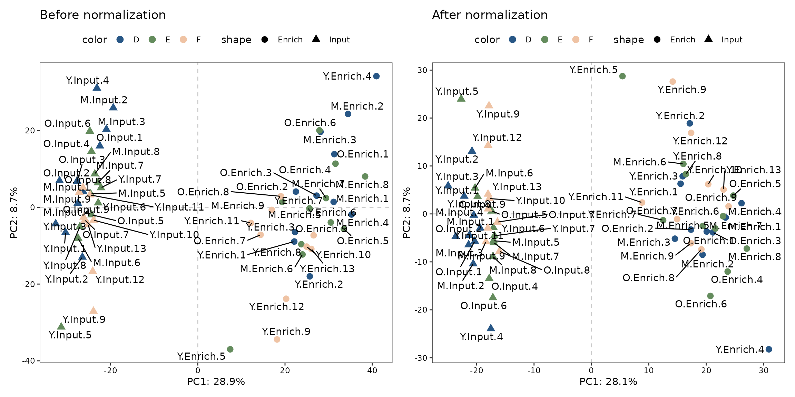

enONE_tutorial-zh
enONE_tutorial-zh.Rmd前言
细胞内的核苷类代谢物，如烟酰胺腺嘌呤二核苷酸（NAD），能够被添加到mRNA
5’末端，形成NAD帽修饰的RNA（NAD-RNA）；这类非经典起始核苷酸（NCIN）修饰的RNA被统称为NCIN帽修饰的RNA（NCIN-RNA）。NCIN-RNA天然地将代谢物与基因表达紧密地联系起来，定义了一种新颖但功能未知的表观转录修饰。NCIN-RNA的表征是功能研究的前提。当前NCIN-RNA的表征方法，如ONE-seq和DO-seq，实现了代谢物帽修饰RNA在细胞和组织中的鉴定。然而，这些方法产出的数据会受到源于化学酶促标记及亲和富集反应等实验操作误差的影响。因此，这里提出了enONE这种NAD-RNA表观转录组的计算分析方法，实现NAD-RNA数据的定量和比较分析。
enONE 的R包可以在GitHub中找到（https://github.com/thereallda/enONE）
Setup
在这个教程中，我们会使用人类外周血单核细胞（PBMCs）的NAD-RNA-seq数据来展示
enONE 的工作流程。
要注意的是，这里混入了三种spike-in RNAs： 1.
来自模式生物黑腹果蝇的总RNA，用于 enONE 的normalization；
2. Synthetic
RNA，其中含有5％的NAD修饰形式（相对于m7G-RNA），用于确定富集灵敏度； 3.
Synthetic RNA，其为100％ m7G加帽的形式，用于确定富集特异性。

Figure: Schematic workflow for total RNAs from PBMCs and three sets of spike-ins.
我们首先读取数据，包括基因表达量的count matrix和样本信息的metadata。matrix和样本信息的。metadata至少包括两列，即用于样本生物分组的”condition”列和用于样本富集分组的”enrich”列。
library(enONE)
library(tidyverse)
library(patchwork)
# read in metadata and counts matrix
counts_mat <- read.csv("data/Counts.csv", row.names = 1)
meta <- read.csv("data/metadata.csv", comment.char = "#")
head(meta)
#> id sample.id condition batch enrich
#> 1 D1 Y2 Y.Input D Input
#> 2 D2 Y10 Y.Input D Input
#> 3 D3 Y14 Y.Input D Input
#> 4 D4 Y16 Y.Input D Input
#> 5 D5 M13 M.Input D Input
#> 6 D6 M14 M.Input D Input
# rownames of metadata should be consistent with the colnames of counts_mat
rownames(meta) <- meta$id另外，metadata也可以包括其他信息，例如样本的批次信息。
接下来，我们使用count matrix和metadata创建一个 Enone
对象。
Enone 对象，包含了NAD-RNA-seq数据集的数据（raw and
normalized counts
data）和结果信息（例如，数据标准化性能的打分和NAD-RNA富集结果）。
在构建 Enone 对象时，我们可以提供以下参数：
- spike-in 基因的前缀，例如果蝇Flybase基因id前缀为FB
(
spike.in.prefix = "^FB")； - synthetic spike-in的id
(
synthetic.id = c("Syn1", "Syn2"))，这需要与counts_mat中的行名相同； - Input样本分组的id (
input.id = "Input") 和Enrichment样本分组的id (enrich.id = "Enrich")，与enrich列相同。
其中, “Syn1”代表5% NAD-RNA spike-in and “Syn2”代表100% m7G-RNA spike-in.
synthetic.id是可选的参数.
# prefix of Drosophila spike-in genes
spikeInPrefix <- "^FB"
# create Enone
Enone <- createEnone(data = counts_mat,
col.data = meta,
spike.in.prefix = spikeInPrefix,
synthetic.id = c("Syn1", "Syn2"),
input.id = "Input",
enrich.id = "Enrich"
)
Enone
#> class: Enone
#> dim: 76290 62
#> metadata(0):
#> assays(1): ''
#> rownames(76290): ENSG00000223972 ENSG00000227232 ... Syn1 Syn2
#> rowData names(3): GeneID SpikeIn Synthetic
#> colnames(62): D1 D2 ... F22 F24
#> colData names(7): id id.1 ... enrich replicate标准流程
enONE 流程包括以下四步:
- 质量控制（Quality control）;
- 基因集选取（Gene set selection）;
- 数据校正（Normalization procedures）;
- 数据校正效果评估（Normalization performance assessment）.
质量控制（Quality control）
enONE 首先进行质量控制步骤，通过
FilterLowExprGene 保留至少在 n
个样本中至少具有 min.count
的基因来完成此步骤。n 由 group
中指定的最小样本组的大小确定。
Enone <- FilterLowExprGene(Enone, group = Enone$condition, min.count = 20)
Enone
#> class: Enone
#> dim: 27661 62
#> metadata(0):
#> assays(1): ''
#> rownames(27661): ENSG00000227232 ENSG00000268903 ... Syn1 Syn2
#> rowData names(3): GeneID SpikeIn Synthetic
#> colnames(62): D1 D2 ... F22 F24
#> colData names(7): id id.1 ... enrich replicate此外，可以通过
OutlierTest对异常样本进行评估并进一步移除（return=TRUE）。由于没有样本被标记为异常值，因此我们将在后续分析中使用所有样本。
## ronser"s test for outlier assessment
OutlierTest(Enone, return=FALSE)
#> Rosner's outlier test
#> i Mean.i SD.i Value Obs.Num R.i+1 lambda.i+1 Outlier
#> 1 0 1.602661e-15 51.77231 80.37523 15 1.552475 3.212165 FALSE
#> 2 1 -1.317627e+00 51.14304 78.20437 19 1.554894 3.205977 FALSE
#> 3 2 -2.642993e+00 50.50717 70.38990 41 1.445991 3.199662 FALSE运行enONE
enONE
函数可以进行基因选择、数据标准化和标准化效果评估。该函数在
rowData 中存储选择的基因集，在 counts
slot中返回标准化计数矩阵（当 return.norm=TRUE 时），在
enone_factor slot中返回标准化因子，在
enone_metrics 和 enone_scores
slots中返回评估指标和得分。以下是这些步骤的详细描述。
Enone <- enONE(Enone,
scaling.method = c("TC", "UQ", "TMM", "DESeq", "PossionSeq"),
ruv.norm = TRUE, ruv.k = 3,
eval.pam.k = 2:6, eval.pc.n = 3,
return.norm = TRUE
)
#> Gene set selection for normalization and assessment...
#> - The number of negative control genes for normalization: 1000
#> - Estimate dispersion & Fit GLM...
#> - Testing differential genes...
#> - The number of positive evaluation genes: 500
#> - Estimate dispersion & Fit GLM...
#> - Testing differential genes...
#> - The number of negative evaluation genes: 500
#> - Estimate dispersion & Fit GLM...
#> - Testing differential genes...
#> Apply normalization...
#> - Scaling...
#> - Regression-based normalization...
#> Perform assessment...基因集选取（Gene set selection）
enONE 定义了三组基因，包括：
- 负对照（
NegControl）：默认情况下，enONE将 果蝇 spike-ins（或其他外源生物的RNA spike-in）中 FDR 排名最低的 1,000 个基因作为负对照（不富集的基因），用于校正无关误差。 - 负评估（
NegEvaluation）：默认情况下，enONE将样本中 FDR 排名最低的 500 个基因作为负评估基因，用于评估无关误差。 - 正评估（
PosEvaluation）：默认情况下，enONE将样本中 FDR 排名最高的 500 个基因作为正评估基因，用于评估研究感兴趣的差异。
基因集的选择可以在 enONE 函数中使用
auto=TRUE 参数（默认值）自动定义，也可以在
neg.control, pos.eval, neg.eval
参数中分别提供。
可以通过
getGeneSet函数和基因集的名称（即"NegControl"、"NegEvaluation"、"PosEvaluation"）来获取相应的基因集。
getGeneSet(Enone, name = "NegControl")[1:5]
#> [1] "FBgn0031247" "FBgn0031255" "FBgn0004583" "FBgn0031324" "FBgn0026397"数据校正（Normalization）
enONE 整合了全局缩放（global
scaling）和基于回归的校正方法（regression-based
normalization）来产生normalization方法。
对于全局缩放方法，enONE 整合了五种方法，包括：
Total Count (TC);
Upper-Quartile (UQ);
Trimmed Mean of M Values (TMM);
DESeq;
PossionSeq.
默认情况下，enONE 使用所有缩放方法，但用户可以在
scaling.method 参数中选择要使用的缩放程序。
对于regression-based方法，enONE
利用了三种RUV的方法，包括：
RUVg;
RUVs;
RUVse.
例如，您可以通过选择 ruv.norm=TRUE, ruv.k=2
来执行使用前两个无关误差因子的 RUV。
RUVse 是类似于 RUVs 的方法。它基于每个富集样本或背景样本组的重复样本中的负对照基因来估计无关误差因子，其假设富集效应在重复之间是相对稳定的。
所有使用的normalization方法都可以使用 listNormalization
来提取。
listNormalization(Enone)
#> [1] "TC" "UQ" "TMM"
#> [4] "DESeq" "PossionSeq" "Raw"
#> [7] "Raw_RUVg_k1" "Raw_RUVg_k2" "Raw_RUVg_k3"
#> [10] "Raw_RUVs_k1" "Raw_RUVs_k2" "Raw_RUVs_k3"
#> [13] "Raw_RUVse_k1" "Raw_RUVse_k2" "Raw_RUVse_k3"
#> [16] "TC_RUVg_k1" "TC_RUVg_k2" "TC_RUVg_k3"
#> [19] "TC_RUVs_k1" "TC_RUVs_k2" "TC_RUVs_k3"
#> [22] "TC_RUVse_k1" "TC_RUVse_k2" "TC_RUVse_k3"
#> [25] "UQ_RUVg_k1" "UQ_RUVg_k2" "UQ_RUVg_k3"
#> [28] "UQ_RUVs_k1" "UQ_RUVs_k2" "UQ_RUVs_k3"
#> [31] "UQ_RUVse_k1" "UQ_RUVse_k2" "UQ_RUVse_k3"
#> [34] "TMM_RUVg_k1" "TMM_RUVg_k2" "TMM_RUVg_k3"
#> [37] "TMM_RUVs_k1" "TMM_RUVs_k2" "TMM_RUVs_k3"
#> [40] "TMM_RUVse_k1" "TMM_RUVse_k2" "TMM_RUVse_k3"
#> [43] "DESeq_RUVg_k1" "DESeq_RUVg_k2" "DESeq_RUVg_k3"
#> [46] "DESeq_RUVs_k1" "DESeq_RUVs_k2" "DESeq_RUVs_k3"
#> [49] "DESeq_RUVse_k1" "DESeq_RUVse_k2" "DESeq_RUVse_k3"
#> [52] "PossionSeq_RUVg_k1" "PossionSeq_RUVg_k2" "PossionSeq_RUVg_k3"
#> [55] "PossionSeq_RUVs_k1" "PossionSeq_RUVs_k2" "PossionSeq_RUVs_k3"
#> [58] "PossionSeq_RUVse_k1" "PossionSeq_RUVse_k2" "PossionSeq_RUVse_k3"校正后的数据可以通过 Counts 函数获取。
head(enONE::Counts(Enone, slot="sample", method="DESeq_RUVg_k2"))[,1:5]
#> D1 D2 D3 D4 D5
#> ENSG00000227232 8.513936 11.645203 12.431441 7.453572 11.104087
#> ENSG00000268903 3.305409 8.100305 5.277670 26.325845 7.088225
#> ENSG00000269981 2.270299 4.876642 2.402698 18.118129 6.068101
#> ENSG00000279457 11.895695 9.998730 8.760526 11.204313 16.375896
#> ENSG00000225630 13.767575 16.292915 15.365490 10.140265 17.834578
#> ENSG00000237973 28.042040 37.277287 39.847772 34.078301 33.952026数据校正效果评估
enONE
利用了八个与基因表达分布的不同方面相关的标准化性能指标来评估数据标准化的性能。这八个指标分别为：
-
BIO_SIM：生物组的相似性。通过计算前三个表达PCs（默认情况下）上的欧氏距离度量，由condition列定义的聚类的平均轮廓宽度。BIO_SIM越大越好。 -
EN_SIM：富集组的相似性。通过计算前三个表达PCs（默认情况下）上的欧氏距离度量，由enrich列定义的聚类的平均轮廓宽度。EN_SIM越大越好。 -
BAT_SIM：批次组的相似性。通过计算前三个表达PCs（默认情况下）上的欧氏距离度量，由batch列定义的聚类的平均轮廓宽度。BAT_SIM越小越好。 -
PAM_SIM：PAM 聚类组的相似性。通过计算前三个表达PCs（默认情况下）上的欧氏距离度量，由 PAM 聚类（根据eval.pam.k进行聚类）定义的聚类的最大平均轮廓宽度。PAM_SIM越大越好。 -
WV_COR：研究相关变量的保留程度。对原始计数的正评估基因（PosEvaluation）子矩阵的前eval.pc.n个PCs 进行回归的 R2 测量。WV_COR越大越好。 -
UV_COR：无关误差移除的程度。对原始计数的负评估基因（NegEvaluation）子矩阵的前eval.pc.n个PCs 进行回归的 R2 测量。UV_COR越小越好。 -
RLE_MED：平均平方中位数相对对数表达（RLE）。RLE_MED越小越好。 -
RLE_IQR：相对于四分位距（IQR）的方差。RLE_IQR越小越好。
评估指标可以通过 getMetrics 进行获取。
getMetrics(Enone)[1:5,]
#> BIO_SIM EN_SIM BATCH_SIM PAM_SIM RLE_MED
#> DESeq_RUVg_k2 -0.02467593 0.3576650 -0.03483061 0.5713398 9.319387e-06
#> PossionSeq_RUVs_k3 0.10240479 0.3374029 -0.03965069 0.5556398 9.971803e-05
#> TMM_RUVg_k2 -0.02664678 0.3518415 -0.03524885 0.5595637 8.500478e-05
#> DESeq_RUVg_k3 -0.04651463 0.3485155 -0.04427468 0.5708689 1.370353e-05
#> DESeq_RUVs_k1 0.03352455 0.3391415 -0.04444996 0.5224180 7.861089e-06
#> RLE_IQR WV_COR UV_COR
#> DESeq_RUVg_k2 0.011996148 0.7401496 0.3258051
#> PossionSeq_RUVs_k3 0.012314397 0.7709943 0.3154878
#> TMM_RUVg_k2 0.012089861 0.7404610 0.3288269
#> DESeq_RUVg_k3 0.011133971 0.6688187 0.4166522
#> DESeq_RUVs_k1 0.009145155 0.6495402 0.3680677评估指标通过转换为秩值，并通过平均各指标的秩值来获得特定方法的打分（score）。数据标准化效果的打分可以通过
getScore 获取。
getScore(Enone)[1:5,]
#> BIO_SIM EN_SIM BATCH_SIM PAM_SIM RLE_MED RLE_IQR WV_COR
#> DESeq_RUVg_k2 32 59 40 59 56 25 20
#> PossionSeq_RUVs_k3 60 23 47 50 33 23 23
#> TMM_RUVg_k2 30 50 42 54 39 24 21
#> DESeq_RUVg_k3 20 48 53 58 54 29 12
#> DESeq_RUVs_k1 55 32 54 25 57 32 5
#> UV_COR SCORE
#> DESeq_RUVg_k2 59 43.750
#> PossionSeq_RUVs_k3 60 39.875
#> TMM_RUVg_k2 58 39.750
#> DESeq_RUVg_k3 39 39.125
#> DESeq_RUVs_k1 52 39.000选择数据标准化方法
enONE 提供了biplot来探索数据校正方法的全空间，可以通过
interactive=TRUE 来开启交互模式。
# get performance score
enScore <- getScore(Enone)
# perform PCA based on evaluation score, excluding BAT_SIM column (3) if no batch information provided, and SCORE column (9).
# pca.eval <- prcomp(enScore[,-c(3, 9)], scale = TRUE)
pca.eval <- prcomp(enScore[,-c(9)], scale = TRUE)
# pca biplot
PCA_Biplot(pca.eval, score = enScore$SCORE, interactive = FALSE)在这个图中，每个点对应一个标准化程序，并颜色代表性能得分（八个性能指标rank的均值）。蓝色箭头对应于性能指标的PCA载荷。蓝色箭头的方向和长度可以解释为每个指标对前两个主成分的贡献程度。
这里使用打分最高的标准化程序 DESeq_RUVg_k2
进行下游分析。
# select normalization
norm.method <- rownames(enScore[1,])
# get normalized counts
norm.data <- enONE::Counts(Enone, slot = "sample", method = norm.method)
# get normalization factors
norm.factors <- getFactor(Enone, slot = "sample", method = norm.method)
norm.method
#> [1] "DESeq_RUVg_k2"需要注意的是，如果
enONE运行的时候没有返回校正后数据（i.e.,return.norm=FALSE），可以通过下面的代码手动执行数据标准化。# perform normalization Enone <- UseNormalization(Enone, slot = "sample", method = norm.method) # get normalized counts norm.data <- Counts(Enone, slot = "sample", method = norm.method)
数据校正的效果
这里使用PCA展示数据校正的效果。
# create sample name, e.g., Y3.Input
samples_name <- paste(Enone$condition, Enone$replicate, sep=".")
# PCA for raw count
p1 <- PCAplot(enONE::Counts(Enone, slot="sample", "Raw"),
color = Enone$batch,
shape = Enone$enrich,
label = samples_name,
vst.norm = TRUE) +
ggtitle("Before normalization")
# PCA for normalized count
p2 <- PCAplot(log1p(norm.data),
color = Enone$batch,
shape = Enone$enrich,
label = samples_name,
vst.norm = FALSE) +
ggtitle("After normalization")
# combine two plots
p1 + p2
#> Warning: ggrepel: 1 unlabeled data points (too many overlaps). Consider
#> increasing max.overlaps
鉴定富集基因
enONE 可用于富集基因的鉴定。FindEnrichment
函数自动地根据 condition
列中的每个生物学分组鉴定富集的基因。
默认情况下，富集基因（即NAD-RNA）为Enrichment/Input ≥
2（logfc.cutoff = 1），FDR <
0.05（p.cutoff = 0.05）的基因。
使用getEnrichment函数可以获取一个列表包含了各组的富集结果。
# find all enriched genes
Enone <- FindEnrichment(Enone, slot="sample", norm.method = norm.method,
logfc.cutoff = 1, p.cutoff = 0.05)
#> - Estimate dispersion & Fit GLM...
#> - Testing differential genes...
# get filtered enrichment results
res.sig.ls <- getEnrichment(Enone, slot="sample", filter=TRUE)
# count number of enrichment in each group
unlist(lapply(res.sig.ls, nrow))
#> Y.Enrich_Y.Input M.Enrich_M.Input O.Enrich_O.Input
#> 579 672 683res.sig.ls
中每个表都是一个data.frame，其中行为基因，列为基因的相关信息（GeneID、logFC、p值等）。表格中包含以下列：
GeneID：基因的ID。logFC：富集样本和输入样本之间的log2倍变化。正值表示基因在富集组中更高度富集。logCPM：所有样本平均表达的log2 CPM（counts per million）。LR：似然比检验的似然比。PValue：来自似然比检验的p值。FDR：p值的假阳性发现率，默认使用"BH"方法。
head(res.sig.ls[[1]])
#> GeneID logFC logCPM LR PValue FDR
#> 1 ENSG00000013275 2.271643 7.518198 731.6422 3.936608e-161 5.444329e-157
#> 2 ENSG00000113387 2.643018 9.732157 631.6712 2.164465e-139 1.496728e-135
#> 3 ENSG00000104853 2.244442 7.839256 587.7484 7.738626e-130 3.567507e-126
#> 4 ENSG00000105185 2.094086 6.147852 558.6392 1.662061e-123 5.746574e-120
#> 5 ENSG00000143110 3.084209 9.115976 550.0416 1.232914e-121 3.410239e-118
#> 6 ENSG00000173915 2.324782 7.005478 483.7653 3.239173e-107 7.466295e-104enONE 提供 reduceRes
函数将各个富集表格的结果转换到同一个 data.frame
中。接着，可以使用 BetweenStatPlot
可视化各组NAD-RNA修饰水平。
# simplify group id
names(res.sig.ls) <- c("Young", "Mid", "Old")
# logfc.col specify the name of logFC column
nad_df1 <- reduceRes(res.sig.ls, logfc.col = "logFC")
# convert the Group column as factor
nad_df1$Group <- factor(nad_df1$Group, levels = unique(nad_df1$Group))
# draw plot
bxp1 <- BetweenStatPlot(nad_df1, x="Group", y="logFC", color="Group",
step.increase = 0.6, add.p = "p",
comparisons = list(c("Young", "Mid"),
c("Young", "Old")))
bxp1
处理synthetic spike-in
由于样本中加入了synthetic RNA，其中一个带有5%的NAD帽，另一个带有100%的m7G帽，我们可以利用这些spike-ins来确定捕获的灵敏度和特异性。
synEnrichment计算具有给定标准化方法的spike-ins的富集水平。DotPlot可用于可视化spike-in的富集水平。
# compute synthetic spike-in enrichment
syn_level <- synEnrichment(Enone, method=norm.method, log=TRUE)
# transform to long format
syn_df <- as.data.frame(syn_level) %>%
rownames_to_column("syn_id") %>%
pivot_longer(cols = -syn_id,
names_to = "id",
values_to = "logFC") %>%
left_join(meta[,c("id","condition")], by="id")
# remove suffix of condition for simplification
syn_df$condition <- gsub("\\..*", "", syn_df$condition)
# rename facet label
samples_label <- setNames(c("5% NAD-RNA", "100% m7G-RNA"),
nm=c("Syn1", "Syn2"))
# draw dotplot
DotPlot(syn_df, x="syn_id", y="logFC", fill="syn_id") +
theme(legend.position = "none") +
scale_x_discrete(labels=samples_label)
#> Bin width defaults to 1/30 of the range of the data. Pick better value with
#> `binwidth`.其中，具有5% NAD-RNA的Syn1有明显富集，而100% m7G-RNA的Syn2并没有出现富集，表明了富集实验的特异性。
# save Enone data
save(Enone, file="data/Enone.RData")Session Info
Session Info
sessionInfo()
#> R version 4.4.0 (2024-04-24)
#> Platform: x86_64-pc-linux-gnu
#> Running under: Ubuntu 22.04.4 LTS
#>
#> Matrix products: default
#> BLAS: /usr/lib/x86_64-linux-gnu/openblas-pthread/libblas.so.3
#> LAPACK: /usr/lib/x86_64-linux-gnu/openblas-pthread/libopenblasp-r0.3.20.so; LAPACK version 3.10.0
#>
#> locale:
#> [1] LC_CTYPE=C.UTF-8 LC_NUMERIC=C LC_TIME=C.UTF-8
#> [4] LC_COLLATE=C.UTF-8 LC_MONETARY=C.UTF-8 LC_MESSAGES=C.UTF-8
#> [7] LC_PAPER=C.UTF-8 LC_NAME=C LC_ADDRESS=C
#> [10] LC_TELEPHONE=C LC_MEASUREMENT=C.UTF-8 LC_IDENTIFICATION=C
#>
#> time zone: UTC
#> tzcode source: system (glibc)
#>
#> attached base packages:
#> [1] stats graphics grDevices utils datasets methods base
#>
#> other attached packages:
#> [1] patchwork_1.2.0 lubridate_1.9.3 forcats_1.0.0 stringr_1.5.1
#> [5] dplyr_1.1.4 purrr_1.0.2 readr_2.1.5 tidyr_1.3.1
#> [9] tibble_3.2.1 ggplot2_3.5.1 tidyverse_2.0.0 enONE_1.0.0
#>
#> loaded via a namespace (and not attached):
#> [1] pbapply_1.7-2 rlang_1.1.3
#> [3] magrittr_2.0.3 matrixStats_1.3.0
#> [5] compiler_4.4.0 flexmix_2.3-19
#> [7] systemfonts_1.0.6 vctrs_0.6.5
#> [9] pkgconfig_2.0.3 crayon_1.5.2
#> [11] fastmap_1.1.1 backports_1.4.1
#> [13] XVector_0.44.0 labeling_0.4.3
#> [15] utf8_1.2.4 rmarkdown_2.26
#> [17] tzdb_0.4.0 UCSC.utils_1.0.0
#> [19] ragg_1.3.1 xfun_0.43
#> [21] modeltools_0.2-23 zlibbioc_1.50.0
#> [23] cachem_1.0.8 GenomeInfoDb_1.40.0
#> [25] jsonlite_1.8.8 EnvStats_2.8.1
#> [27] highr_0.10 DelayedArray_0.30.1
#> [29] fpc_2.2-12 BiocParallel_1.38.0
#> [31] broom_1.0.5 parallel_4.4.0
#> [33] prabclus_2.3-3 cluster_2.1.6
#> [35] R6_2.5.1 stringi_1.8.4
#> [37] bslib_0.7.0 limma_3.60.0
#> [39] car_3.1-2 GenomicRanges_1.56.0
#> [41] jquerylib_0.1.4 diptest_0.77-1
#> [43] Rcpp_1.0.12 SummarizedExperiment_1.34.0
#> [45] knitr_1.46 IRanges_2.38.0
#> [47] splines_4.4.0 timechange_0.3.0
#> [49] Matrix_1.7-0 nnet_7.3-19
#> [51] tidyselect_1.2.1 abind_1.4-5
#> [53] yaml_2.3.8 codetools_0.2-20
#> [55] lattice_0.22-6 withr_3.0.0
#> [57] Biobase_2.64.0 evaluate_0.23
#> [59] desc_1.4.3 mclust_6.1.1
#> [61] kernlab_0.9-32 pillar_1.9.0
#> [63] ggpubr_0.6.0 MatrixGenerics_1.16.0
#> [65] carData_3.0-5 stats4_4.4.0
#> [67] plotly_4.10.4 generics_0.1.3
#> [69] hms_1.1.3 S4Vectors_0.42.0
#> [71] munsell_0.5.1 scales_1.3.0
#> [73] class_7.3-22 glue_1.7.0
#> [75] lazyeval_0.2.2 tools_4.4.0
#> [77] robustbase_0.99-2 data.table_1.15.4
#> [79] locfit_1.5-9.9 ggsignif_0.6.4
#> [81] fs_1.6.4 grid_4.4.0
#> [83] edgeR_4.2.0 colorspace_2.1-0
#> [85] GenomeInfoDbData_1.2.12 cli_3.6.2
#> [87] textshaping_0.3.7 fansi_1.0.6
#> [89] viridisLite_0.4.2 S4Arrays_1.4.0
#> [91] paintingr_0.1.0 gtable_0.3.5
#> [93] DEoptimR_1.1-3 rstatix_0.7.2
#> [95] DESeq2_1.44.0 sass_0.4.9
#> [97] digest_0.6.35 BiocGenerics_0.50.0
#> [99] SparseArray_1.4.3 ggrepel_0.9.5
#> [101] farver_2.1.1 htmlwidgets_1.6.4
#> [103] memoise_2.0.1 htmltools_0.5.8.1
#> [105] pkgdown_2.0.9 lifecycle_1.0.4
#> [107] httr_1.4.7 statmod_1.5.0
#> [109] MASS_7.3-60.2